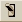

The Tolerancing dialog box sets up the tolerancing values and distribution types for the tolerancing analysis. This feature is available from the Builder toolbar.
To open the Tolerancing dialog box, right-click a Builder cell in any column with a numeric field and select Tolerance Range from the pop-up menu. Two types of distribution are implemented: Normal Gaussian and Uniform.
Normal Gaussian distribution is the default distribution. When you select it, the Tolerancing dialog box displays a field for entering standard deviation. The default is 1 sigma.
Uniform distribution includes the nominal values and the range values corresponding to the width of the Gaussian distribution curve. The range should show a maximum (plus) and a minimum (minus). The default range is set to + or – the nominal value entered in cell.
| Lens Options | Applies only to the OPTICAL command. |
| Irregularity | Sets the value for irregularity of the lens. The unit for irregularity values is in fringes. |
| Wavelength | Sets the reference wavelength. The unit for wavelength values is in nanometers. Default is 633. |
| Wedge | Sets the value for the wedge of the lens. The unit for wedge values is in millimeters or defined system units. |
To initiate tolerancing in ASAP and to generate random perturbations, select  (Perturb) from the Builder toolbar, complete the Perturb dialog box, and click OK.
To view and edit existing tolerancing data in a Builder spreadsheet, select  (Tolerance
Data) on the Builder toolbar, or Tolerancing Data from the Builder
menu.
(Tolerance
Data) on the Builder toolbar, or Tolerancing Data from the Builder
menu.